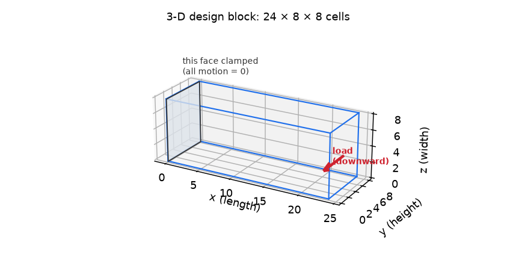
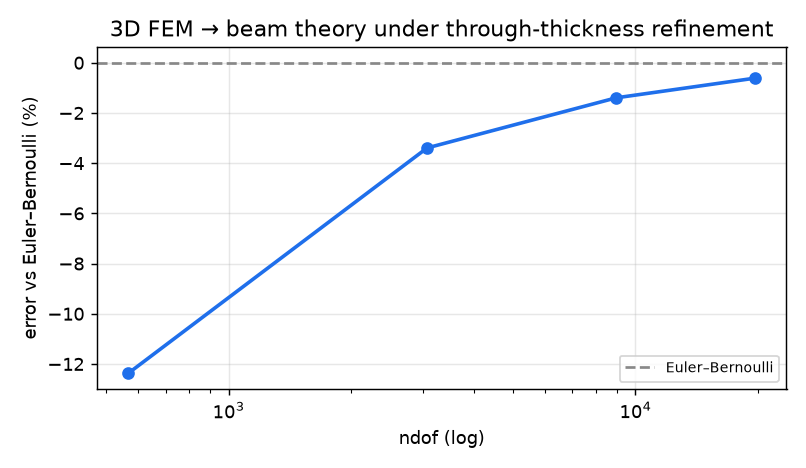

A from-scratch 3-D differentiable simulator on the GPU, checked against beam theory, then used for 3-D topology optimization.
The same “invent the optimal material layout” problem as Trial 3, but in full 3-D — a solid block instead of a flat rectangle. Because no ready-made 3-D simulator was on hand, this trial builds one from scratch and proves it is correct before optimizing: the 3-D simulator is the foundation a future agent will use to design three-dimensional parts.

The 3-D design block: the shaded end face is clamped; the red arrow is the load on the far face. The optimizer fills in where material should go.
| Design region | A 3-D block, 24 × 8 × 8 cells |
| How it is held | One end face fully clamped (a cantilever) |
| Load | A downward force at the centre of the opposite (free) face |
| Material budget | At most 30% of the block may be solid |
| Goal | Minimize compliance (flexibility) = maximize stiffness |
| Hardware | Runs on the GPU (6075 unknown displacements solved each step) |
Two things. (1) Is the new simulator correct? Its element math is checked algebraically, and a plain uniform block must reproduce textbook beam theory as the mesh is refined. (2) Does optimization work? The resulting 3-D structure should be a sensible load-carrying shape at the target material budget.
Optimised 3D cantilever — drag to rotate, scroll to zoom, and use the density ≥ slider (top-left) to peel away low-density material. Static fallback: PNG.
The result above used our own optimizer. Here we instead hand the agent only the differentiable simulator and let it write its own optimizer from scratch, run it on the GPU, and submit a design — repeated as independent runs (a “pass@k” reliability test). Grid 24×8×8; each design is independently re-scored.
| feasible runs | 10 / 10 10/10 |
| stiffness vs our reference optimizer | best -1.32% · mean -1.23% (negative = stiffer than our reference) |
| independent recompute | every reported compliance was recomputed from the agent's saved design (no fabrication) |
| no peeking at the answer | CLEAN the agents' code never referenced the reference solution |
| typical effort | median 8 turns per run (agent wrote & ran its own optimizer) |
Run headless on a Claude subscription (no API key). A representative agent-authored optimizer (a genuine Optimality-Criteria scheme with Lagrangian volume bisection and move limits) is committed at results/agent_demo/agent_optimizer.py.

For a plain uniform block, the simulator's tip deflection approaches the Euler–Bernoulli beam-theory value as the mesh is refined through the thickness. The gap at coarse meshes is “shear locking” (a known stiffness artifact of simple elements), not a bug — it shrinks with refinement.
| element math — rigid-body check | 6 of the expected 6 free-motion modes (a correct element can move/rotate freely with zero internal force) PASS |
| element math — symmetry & zero-force motion | stiffness matrix symmetric = True; force under a rigid shift 3e-17 (≈ 0, as it must be) |
| simulator vs textbook beam theory | error shrinks to -0.61% at the finest mesh (converges) PASS |
| optimized stiffness (compliance, lower = stiffer) | 49.98 using 30% material (block 24×8×8, 6075 unknowns, on GPU) |
| no peeking at the answer | CLEAN the agent's own files never read the stored answer or grader |
These rows verify the 3-D simulator itself (built from scratch here). The element passes exact algebraic checks and the simulator converges to closed-form beam theory; coarse-mesh stiffness is the known shear-locking artifact of simple elements. Whether an AI agent can drive this simulator is tested below.
The simulator above forms the full stiffness matrix and solves it directly. That uses memory proportional to the number of unknowns squared, which caps the grid at a few thousand unknowns. A matrix-free rewrite never builds the matrix — it applies the stiffness one small element at a time and solves with an iterative method (conjugate gradient), using memory proportional to the unknowns (not their square). The density filter is likewise replaced by a small 3-D convolution. Both stay exactly differentiable, so the gradient-based optimizer is unchanged.
Validated against the direct solver: stiffness values match to 5e-13 and gradients to 9e-10 (i.e. identical). Speed and reach:
| 16×6×6 (2,499 unknowns) | matrix-free 3 ms · dense 0.02 s |
| 24×8×8 (6,075 unknowns) | matrix-free 5 ms · dense 0.18 s |
| 40×12×12 (20,787 unknowns) | matrix-free 11 ms · dense 6.57 s |
| 64×24×24 (121,875 unknowns) | matrix-free 0.43 s · a direct solve would need a 119 GB matrix (impossible on a 16 GB GPU) |
A full optimization at 48×16×16 (42,483 unknowns, 40 iterations) finishes in 3.3 s on the GPU — a grid the direct solver could not even allocate (14 GB).
Optimized structure on the 48×16×16 grid (42,483 unknowns) — drag to rotate; use the density ≥ slider to peel away low-density material. Static: PNG.
| agent | Here, an AI agent: the large language model does the engineering work itself — writing the solver input, running it, reading the results, and deciding the next step — instead of a human driving the tool. |
| topology optimization | Deciding the optimal layout of material within a region — which parts should be solid and which empty — for a given amount of material. |
| compliance | A measure of flexibility (force × displacement at the load). Lower compliance = stiffer structure, so minimizing compliance maximizes stiffness. |
| differentiable FEM | A finite-element solver written so you can compute exact gradients of the result with respect to the design (via automatic differentiation) — which is what lets a gradient-based optimizer improve the design. |
| SIMP | Solid Isotropic Material with Penalization — the standard topology-optimization scheme that treats each cell’s density as a design variable and pushes intermediate “grey” values toward fully solid or fully empty. |
| OC | Optimality Criteria — a classic, fast update rule for topology optimization. |
| Euler–Bernoulli | Classic beam theory giving a closed-form formula for deflection; it ignores shear deformation, so it is slightly off for short, stubby beams. |
| shear locking | A numerical artifact where simple elements act too stiff in bending; it shrinks as the mesh is refined. |
| matrix-free | Solving without ever building the big matrix: its action on a vector is computed on the fly, so memory grows with the number of unknowns rather than its square. |
| conjugate gradient | An iterative method that solves a large system of equations using only matrix-times-vector products — no need to store or factorise the full matrix. |
| GPU | Graphics Processing Unit — massively parallel hardware that accelerates the linear algebra in the solver. |
| ndof | Number of degrees of freedom — the count of unknown displacements the solver computes (roughly, 2 or 3 per mesh node in 2-D / 3-D). |
| pass@k | Run the agent k independent times; report how often it succeeds — a reliability measure. |
experiment folder on GitHub — README, config.yaml, results/, agent transcripts & authored code.
{kind=link}
{kind=link}